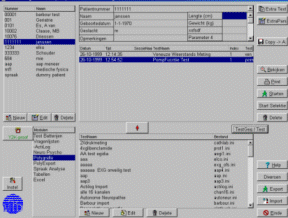
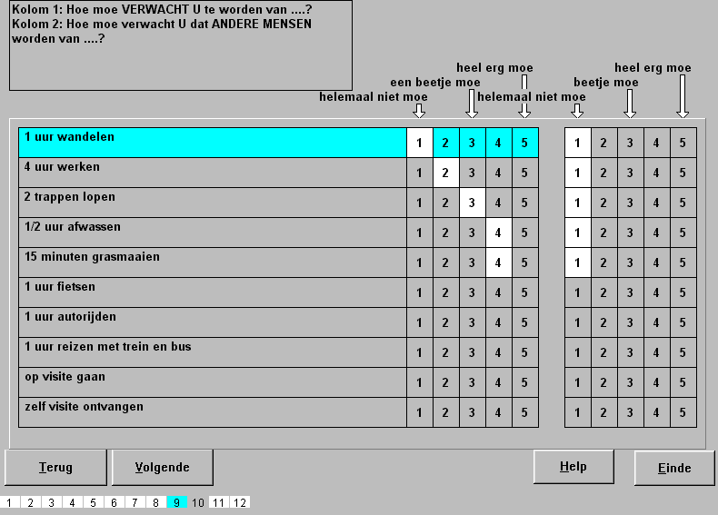
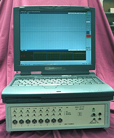
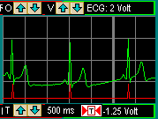
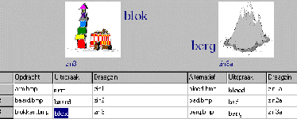

(u maakt u testen zelf) met normgroep-vergelijking met export naar spss,sas,excel,matlab,etc |
 | |
| MID TestOrganizer / New | ||
|  |  |  |
| Vragenlijst / New | Fysio Flex System | Polygrafie / New |
|  |
|
?
U bedenkt een test ! ?
|
| SpraakAnalyse / New | Neuro-Psychologisch / New | Wij realiseren de test ! |
|
|
||
|
|